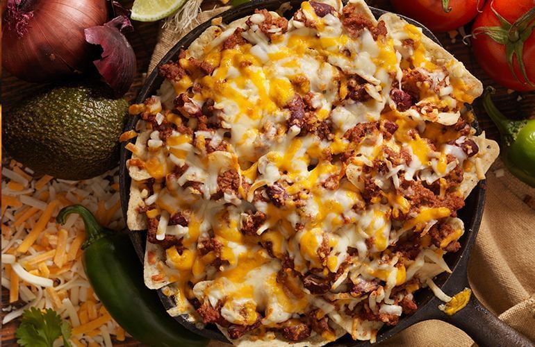

Chilli

Ingredientes
- 600 g de carne de porco cozida
- 250 g de coxão mole ou alcatra cozida
- 1 colher de chá de óleo
- 2 cebolas médias fatiadas
- 3 fatias médias de bacon em pedaços pequenos
- 2 tomates médios, sem pele e sem sementes, picados
- 1 colher de sopa de chilli em pó
- 6 folhas de alface picadas finamente
- 4 colheres de sopa de creme de leite
- Suco de limão
Modo de preparo
- Depois de cozidas, retire as carnes e as desfie.
- Aqueça o óleo em uma panela e refogue a cebola e o bacon.
- Adicione a carne, os tomates e 4 colheres de sopa de água.
- Incorpore o chilli e cozinhe em fogo baixo, mexendo de vez em quando, até a carne dourar e não restar líquido.
- Retire e reserve.
- Coloque o feijão em outra panela e cozinhe, mexendo com vigor até obter uma pasta.
- Reserve.
- Misture o creme de leite com um pouco de suco de limão.
- Sirva bem quentinho, acompanhado de tortilhas ou nachos.